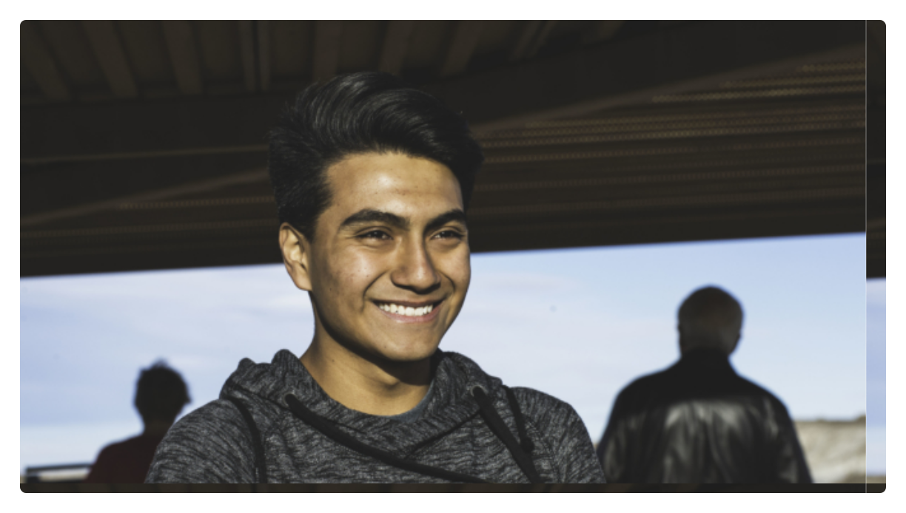
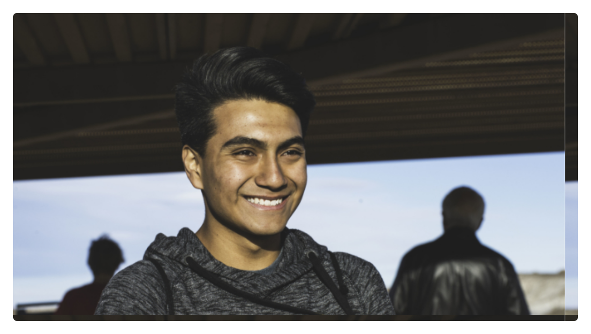

2017 Arizona Report: The Purpose

We set out on Sunday morning. Our first day was a 7 hour drive to Barstow, California. The miles slipped by with beautiful weather, cheerful chatter, car games and uplifting music. We were finally on our way! We stopped for a quick lunch at Taco Bell and everyone found out just how far their $5 lunch budget could stretch. Then it was time to get back on the road.
California has been overrun with so much rain this season that the Central Valley (typically a brown and dusty place) was a beautiful green with long, thick grass and early blooming trees. It was lovely! Before we knew it, we had arrived in Barstow. We checked into our hotel, scarfed down our 9 foot Subway Sandwich, and tucked ourselves into bed.
When we finally arrived at Holbrook Indian School the next day we were tired and ready to take a break from driving. We went to bed that night in the dorms. We woke up to a gorgeous morning! We walked to the cafeteria and were greeted by the most friendly cafeteria staff and a delicious vegan breakfast. This was the first of many incredible meals! After breakfast we met with the Holbrook staff for an orientation. We learned about the ministry, and it showed just how much the students need to see the love of Jesus in action. A high percentage of the children come from homes where there is no running water. In their house, there may be a dirt floor, and electricity is often generator only. Alcohol and drug abuse is unfortunately a common lifestyle there. We had the blessing to reach out to the kids who have lost a close relative to violence or suffered abuse. The message to us was very clear. These kids are hurting! All o f them! And the greatest most effective thing we could do was to just distract them from their pain. And so we listened to them and comforted them.
After orientation we were sent to work. Holbrook relies almost entirely on donations and volunteer labor. Our team had a huge list of things to complete. One group tackled a long stretch of fencing, digging holes, pouring cement and stretching the fence. Another started building storage units, insulating, putting up drywall and roofing. And a third of our group tackled the girls’ dorm by painting, clearing junk and building bunk beds. In our free time after lunch and in the evenings we spent as much time as we could, connecting with the students through basketball, piggy-back rides, tag and conversation. Mid-way through the 2 week trip, Holbrook had a school home leave, so students and staff left for a break. We were able to use this time to visit the Chinle SDA Church (also within the Navajo Nation) where we conducted the Sabbath worship services and helped with a special Health Expo. Because the Native American community has a higher than average incidence of drug and alcohol abuse, the program had a large number of health professionals who specialized in substance abuse. It was an eye-opening experience to support this Health Expo. I never realized that there are so many people in need right here in the United States! Through it was a short two week mission, we have all been changed forever by the experiences we shared. We continue to pray for the work and we hope to be reunited with the friends we made someday soon in heaven.
The Photo Gallery
 

Photo Credit: Various Photographers